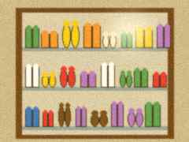
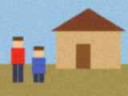

Welcome to Ruth Ann's
Welcome to Ruth Ann'sSalt & Pepper Shaker Page!!
"Life is better with a little Salt and Pepper!"


This page is always under construction so please come back and see!
Welcome to Ruth Ann's


This page is always under construction so please come back and see!
|
Hello and welcome to my page! My name is Ruth Ann Mabry and I live in Lubbock, Texas .
I am 61 years young and I retired in 1996 from 22 years as cafeteria manager at Dunbar Middle School. (If you went to
Dunbar and remember the cinnamon rolls on Fridays, THAT WAS US. Please sign my guestbook!)
My grandson Tyler (age 14) set this page up for me on GeoCities and showed me how to do it so I am doing this all by myself now. So if something looks funny that is why. I am learning HTML a little at a time. I have been collecting salt and pepper shakers since 1971 when my husband Dale bought me a pair of little pink pigs at a gas station in Amarillo on the way to see his mother. Now I have 347 pairs and Dale built me two curio cabinets and I need a third one. Dale passed away in 1994 so I guess I will have to get my son-in-law Mike to do it. (Mike if you are reading this, HINT HINT!!) |
What's On My Page
 My Collection A Picture of My Curio Cabinet Shakers I Am Looking For My Grandbabies My King Ranch Chicken Recipe Links to Other Collectors My Collection A Picture of My Curio Cabinet Shakers I Am Looking For My Grandbabies My King Ranch Chicken Recipe Links to Other Collectors |
| Kind | How Many Pairs | My Favorite |
| Chickens & Roosters | 58 | The hens in the picture at the top! From my sister Jo |
| Pigs | 31 | The pink ones from Amarillo 1971 (the first ones!!) |
| Fruits & Vegetables | 44 | Corn on the cob, Japan 1950's |
| Souvenir (States & Places) | 72 | Carlsbad Caverns stalagmites |
| "Nodders" & Huggers | 19 | Two bears hugging |
| Christmas | 40 | Mr. & Mrs. Claus that light up |
| Cowboy & Western | 27 | Boots! (of course) |
| Other / Misc. | 56 | Toaster with 2 pieces of toast (the toast is the shakers) |
| TOTAL | 347 | and counting!!! |

If you have any of these and would like to sell or TRADE please e-mail me! I have lots of doubles.
|

|
Bev's Shaker Shack - my friend Bev in Ohio who I met on AOL Cow Collectors Corner My Church Texas Tech GUNS UP!! |
Sign My Guestbook! View My Guestbook
You are visitor number
Last updated October 11, 1998
This page best viewed with Netscape Navigator at 800x600